컴퓨터활용능력-1급 (2002-09-15 기출문제)
1과목: 컴퓨터 일반
1. 한글 윈도우즈 98에서 [제어판]의 [암호]를 선택하여 설정할 수 있는 작업으로 가장 거리가 먼 것은?
- Windows 암호 변경
- 다른 컴퓨터에서 이 시스템의 파일과 프린터 원격관리
- 사용자마다 다른 기본 설정 및 바탕화면 사용
- 다른 원격 시스템에 대한 가상 연결 방법에 대한 설정
(정답률: 44%)

2. 다음 중 TELNET에 대한 설명으로 가장 적절한 것은?
- 인터넷상에서 파일을 전송하기 위해 사용되는 서비스이다.
- 원격접속용으로 사용되며, 인터넷을 통한 PC통신 등에 활용될 수 있다.
- 인터넷 사용자끼리 전자우편을 주고받을 때 사용하는 프로토콜이다.
- 원격 컴퓨터의 사용자 정보를 알아보기 위해 사용되는 서비스이다.
(정답률: 59%)
3. 소리(sound)에 대한 디지털화의 가장 기본적인 방법은 PCM 방식으로, 파(wave)의 높이를 매초 44,100회(44.1Khz) 측정하면서 그 수치를 16비트(0-65536)의 범위로 분해해서 기록해 간다. 그렇다면 CD 음질 수준의 스테레오 사운드를 10초간 저장하는데 필요한 최소한의 디스크 공간은 몇 메가바이트[MB]인가?
- 0.88[MB]
- 1.76[MB]
- 3.52[MB]
- 7.04[MB]
(정답률: 53%)
4. 다음 중 최근 일반 가정이나 기관 등에서 널리 사용하는 ADSL의 특징에 대한 설명으로 올바르지 않은 것은?
- 전화선을 사용하여 데이터 통신과 일반 전화를 동시에 이용할 수 있다.
- 비대칭형 디지털 가입자 회선이다.
- 영상 회의, 원격 진료 등과 같은 양방향 서비스를 매우 효율적으로 지원한다.
- 전화는 낮은 주파수를, 데이터 통신은 높은 주파수를 이용하므로 혼선이 발생하지 않는다.
(정답률: 45%)
5. 다음 중 한글 윈도우즈 98의 부팅에 관련된 파일 중 사용자가 입력한 명령어를 해석하여 실행해 주는 명령어 해석기는?
- IO.SYS
- MSDOS.SYS
- COMMAND.COM
- CONFIG.SYS
(정답률: 53%)
6. 다음 중 디스크 검사와 관련된 설명으로 잘못된 것은?
- 디스크 검사는 하드디스크나 플로피 디스크에 물리적 혹은 논리적으로 손상이 있는가를 검사하고 복구 가능한 오류가 있으면 이를 복구해 주는 프로그램이다.
- 디스크 검사에서 하드디스크의 경우 디스크 검사가 시작되면 사용자는 다른 작업을 하지 않는 것이 좋다.
- 디스크 검사를 하면 하드디스크 문제로 인하여 컴퓨터 시스템이 오동작하는 경우나 바이러스의 감염을 예방할 수 있다.
- 디스크 검사의 수행 과정은 [시작]-[프로그램]-[보조 프로그램]-[시스템 도구]에서 [디스크 검사]를 클릭한다.
(정답률: 58%)
7. 다음 중 한글 윈도우즈 98에서 네트워크 설정에 관한 설명으로 잘못된 것은?
- [시작]-[설정]-[제어판]을 선택하여 [제어판] 창에서 네트워크 아이콘을 선택하면 [네트워크] 대화상자가 나타난다.
- [네트워크] 대화상자의 [액세스 제어] 탭을 선택하면 부팅관련 설정을 할 수 있다.
- [네트워크] 대화상자의 [네트워크 구성] 탭을 선택하여 각종 프로토콜과 서비스 등의 설치하거나 제거할 수 있다.
- [네트워크] 대화상자에서 [컴퓨터 확인] 탭을 선택하여 컴퓨터 이름, 작업 그룹 등을 설정할 수 있다.
(정답률: 49%)
8. 한글 윈도우즈 98에서 “winipcfg.exe”의 기능은 ?
- 윈도우 기동시에 설정된 환경변수를 보여준다.
- 컴퓨터의 네트워크 사용을 위한 ip를 설정한다.
- 네트워크상에서 해당 ip를 가진 컴퓨터를 찾아준다.
- 현재 내 컴퓨터의 ip 정보를 보여준다.
(정답률: 45%)
9. 다음 중 운영체제에서 관리하는 가상메모리는 실제로 어떤 장치에 존재하는가?
- 주기억 장치
- 캐시 기억 장치
- 프로세서 장치
- 하드디스크 장치
(정답률: 48%)
10. 한글 윈도우즈 98에서 새 하드웨어를 설치하는 경우, 유의 사항과 가장 거리가 먼 것은?
- 하드웨어를 구입하기 전에 반드시 해당 제품의 사용 시스템의 지원 여부를 확인하여 현재 사용하고 있는 시스템에서 사용이 가능한지 확인한다.
- 카드 방식을 취하고 있는 경우 PCI나 ISA 등의 슬롯을 사용하는 제품이라면 현재 사용자의 시스템에 더 장착할 수 있는 여분의 슬롯이 있는지 확인한다.
- 드라이버 설치는 필히 윈도우즈 98에서 기본적으로 제공하는 드라이버를 설치해야 시스템이 더욱 안정되고 향상된 성능이 제공된다.
- 새 하드웨어 설치후 드라이버는 가능하면 칩셋 제조사의 공식 드라이버나 전용 드라이버를 사용한다.
(정답률: 50%)
11. 다음 중 제어판에 등록되어 있는 내게 필요한 옵션(
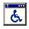
)의 등록정보에서 설정할 수 있는 내용이 아닌 것은?(문제 오류로 실제 시험장에서는 모두 정답 처리된 문제 입니다. 여기서는 1번을 정답 처리 합니다.)- 마우스
- 디스플레이
- 사운드
- 키보드
(정답률: 70%)
12. 십진수 1,024 를 이진수로 올바르게 표현한 것은?
- 10000000000
- 1111111111
- 11111111111
- 1000000000
(정답률: 55%)
13. 다음 중 FTP(File Transfer Protocol)에 관한 설명으로 가장 거리가 먼 것은?
- 인터넷을 통하여 어떤 한 컴퓨터에서 다른 컴퓨터로 파일을 송수신할 수 있도록 지원하는 방법과 지원 프로그램을 통칭한다.
- FTP 서버는 다른 컴퓨터에서 접속하여 파일을 업로드하거나 다운로드하는 기능을 제공하여 주는 컴퓨터를 의미한다.
- 클라이언트 컴퓨터에 FTP 유틸리티(WS-FTP, Cute FTP 등)를 설치하여 보다 효율적으로 사용할 수 있다.
- Anonymous FTP 서버를 이용하여 파일을 다운로드 받기 위해서는 필히 계정을 가지고 있어야 한다.
(정답률: 60%)
14. 다음 중 인터넷 서비스에서 기본적으로 사용하는 포트 번호가 잘못된 것은?
- NEWS : 119
- http : 80
- TELNET : 70
- FTP : 21
(정답률: 47%)
15. 아래 그림은 제어판에 있는 [시스템] 아이콘이다. 이 아이콘을 더블 클릭 하면 현재 컴퓨터에 장착되어 있는 시스템에 관한 정보를 볼 수 있다. 다음 중 이 [시스템] 아이콘을 더블 클릭한 것과 동일한 명령은 무엇인가?
- 바탕화면의 [내 컴퓨터] 아이콘을 더블 클릭한다.
- 바탕화면의 [내 컴퓨터] 아이콘을 마우스 오른쪽 버튼으로 눌러 [등록정보]를 선택한다.
- 바탕화면에서 마우스 오른쪽 버튼을 눌러 [등록정보]를 선택한다.
- 제어판의 [시스템] 아이콘을 드래그하여 바탕화면의 내컴퓨터 위에 놓는다.
(정답률: 54%)
16. 다음 설명에 적합한 장치의 인터페이스는?
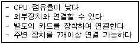
- IDE
- EIDE
- SCSI
- PCI
(정답률: 48%)
17. 컴퓨터의 USB 방식 주변기기가 최근 들어 사용자층이 점점 증가하고 있는 추세이다. 다음 중 USB 방식의 장점과 가장 거리가 먼 것은?
- 핫 플러깅(Hot Plugging) 기능으로 컴퓨터에 전원이 켜져있는 상태에서도 USB 주변기기들을 빼거나 연결할 수 있다.
- USB는 플러그&플레이(Plug & Play) 기능을 지원한다.
- 다양한 호환 기능 USB를 이용하여 연결할 수 있는 주변기기의 최대 개수는 27개이다.
- USB는 버전 1.1 규격에서 12Mbps의 속도를 가지며 버전 2.0에서는 480Mbps로 확장되어 보다 다양한 USB용 주변기기를 사용할 수 있게 하고 있다.
(정답률: 64%)
18. 뉴스 그룹에서 스레드(Thread)란 무엇을 말하는가?
- 뉴스 그룹 서버의 데이터 전송 체계를 일컫는 말이다.
- 뉴스 그룹으로의 사용자 접속 환경을 지칭하는 것이다.
- 어떤 내용에 대한 기사와 그 기사에 대한 질문, 답변들을 묶어서 정리한 체계를 말한다.
- 뉴스 그룹에 기사를 올리는 행위를 말한다
(정답률: 57%)
19. 영상(image)은 화소(pixel)의 2차원 배열로 구성되는데 한 화소가 4비트를 사용한다면 한 화소가 표현할 수 있는 컬러 수는 몇 개인가?
- 16
- 8
- 4
- 2
(정답률: 61%)
20. 컴퓨터 시스템에 EIDE 방식의 두 번째 하드디스크를 추가할 때에 필수 작업에 해당하지 않는 것은?(문제오류로 실제 시험장에서는 2,3번이 정답 처리 되었습니다. 여기서는 2번을 정답 처리 합니다.)
- CMOS 설정
- 포맷
- 드라이브 레이블 설정
- 하드디스크의 마스터/슬레이브 점퍼 설정
(정답률: 68%)
2과목: 스프레드시트 일반
21. 4페이지의 분량을 인쇄하려고 한다. 이때 각 페이지 상단에 작성자의 이름을 넣으려 할 때 지정하는 옵션은?
- 시트이름
- 쪽이름
- 머리글
- 여백지정
(정답률: 61%)
22. 다음 중 서식 파일(템플릿)에 대한 설명으로 잘못된 것은?
- 서식 파일의 확장자는 .xlt이다.
- 통합문서의 기본 서식 파일을 만들려면 XLStart 폴더에 파일명 Book으로 저장한다.
- 모든 새 시트에 나타낼 서식, 스타일, 텍스트, 기타 정보 등을 서식파일로 작성하는 파일에 넣는다.
- 새 통합 문서에서 보호되거나 숨긴 영역을 서식 파일에 넣을 수 없다.
(정답률: 51%)
23. 세개의 값의 집합이 있어야만 유용하게 사용할 수 있는 차트유형은 어느 것인가?
- 거품형
- 분산형
- 표면형
- 영역형
(정답률: 44%)
24. 배열수식을 이용하여 1학년 학생의 국어 평균을 구하려고 하는 올바른 수식은?
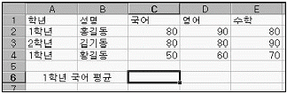
- {=AVERAGE(A2:A4="1학년",C2:C4)}
- {=AVERAGE(IF(A2:A4="1학년",C2:C4))}
- {=AVERAGE(IF(A2:A4=1학년,C2:C4))}
- {=IF(AVERAGE(A2:A4="1학년",C2:C4))}
(정답률: 62%)
25. 아래 화면은 “미리보기” 화면에서 “페이지 나누기 보기”를 누른 후 “페이지 나누기 삽입”을 이용하여 하나의 페이지를 6 페이지로 나눈 것이다. 페이지 분할선을 해제하려면 “페이지 나누기 보기” 화면에서 마우스 오른쪽 버튼을 눌러 나타나는 메뉴 중 어느 것을 선택하면 되는가?
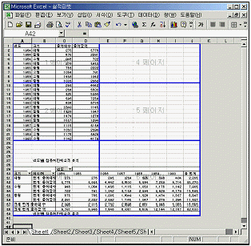
- 페이지 설정
- 인쇄영역 설정
- 모든 페이지 나누기 다시 설정
- 인쇄 영역 다시 설정
(정답률: 54%)
26. 다음 중 조건부 서식에 대한 설명으로 잘못된 것은?
- 특정한 조건을 만족하는 경우에만 서식이 적용되도록 하는 기능이다.
- 조건부 서식이 적용된 후 셀 값이 바뀌어 조건과 일치하지 않아도 셀 서식 설정은 해제되지 않는다.
- 조건은 3개까지 지정할 수 있다.
- 위의 조건에 각각 다른 서식을 부여할 수 있다.
(정답률: 53%)
27. 다음 중 시나리오에 대한 설명으로 잘못된 것은?
- 시나리오는 워크시트에서 저장하고 자동으로 바꿀 수 있는 값의 집합이다.
- 시나리오를 사용하여 워크시트 모델의 결과를 예측할 수 있다.
- 수식의 원하는 결과 값은 알고 있지만 그 결과 값을 계산하기 위해 필요한 입력 값은 모르는 경우 시나리오 기능을 사용한다.
- 값이 서로 다른 그룹을 만들어 워크시트에 저장한 후 다른 결과를 얻기 위해 새로운 시나리오로 전환할 수 있다.
(정답률: 44%)
28. 목표값 찾기를 다음과 같이 지정했을 때 이에 대한 의미가 올바른 것은?
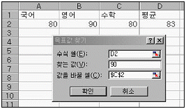
- 평균이 90점이 되려면 수학점수는 얼마가 되어야 하는가
- 영어가 90점이 되려면 수학점수는 얼마가 되어야 하는가
- 평균이 90점이 되려면 영어점수는 얼마가 되어야 하는가
- 평균이 90점이 되려면 국어점수는 얼마가 되어야 하는가
(정답률: 68%)
29. 다음 중 공유 통합 문서에 대한 설명으로 틀린 것은?
- 공유 통합 문서를 네트워크 위치에 복사하면 다른 통합 문서나 문서의 연결이 유지된다.
- 공유 통합 문서의 변경 내용에 관한 정보를 나타내는 변경 내용을 설정한다.
- 공유 통합 문서가 저장된 네트워크 위치를 액세스하는 모든 사용자는 공유 통합 문서에 접근할 수 있다.
- 공유 통합 문서는 사용자의 엑셀 버전과는 관계없이 사용할 수 있다.
(정답률: 54%)
30. 날짜 입력시, 년도의 두 자리만 입력하여도 전체 년도를 표시한다. 하지만 Y2K 문제를 해결하기 위한 방안으로, 두 자리만 입력해도 2000년대로 인식되는 두 자리 년도는 몇 년까지인가?(문제 오류로 실제 시험장에서는 모두 정답 처리한 문제 입니다. 여기서는 1번을 정답 처리 합니다.)
- 29
- 10
- 30
- 50
(정답률: 70%)
31. 0.333...에 해당하는 분수 '1/3'을 워크시트의 셀에 분수 모양으로 입력하려고 한다. 셀서식이 일반으로 지정되어 있는 셀에서 어떻게 입력해야 하는가?
- 그냥 『1/3』이라고 입력하면 된다.
- 『0 1/3』이라고 입력한다.
- 『1 1/3』이라고 입력한다.
- 『=1/3』이라고 입력한다.
(정답률: 51%)
32. 사용자 정의 함수는 ( )로 시작해서 ( )로 끝나도록 되어 있다. ( )안에 알맞은 구문은?
- (macro) (end macro)
- (sub) (end sub)
- (if) (end if)
- (function) (end function)
(정답률: 44%)
33. 다음 중 Microsoft Query를 사용하여 외부 데이터를 가져오는 방법에 속하지 않는 것은?
- 쿼리 마법사의 사용
- 웹 쿼리의 사용
- 매개 변수 쿼리의 사용
- Microsoft Query에서의 직접 작성
(정답률: 38%)
34. 외부 데이터 가져오기의 단축 아이콘 중 아래 그림은 무슨 기능을 하는 것인가?
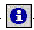
- 외부 데이터 입력
- 중지
- 도움말 보기
- 상태 새로 고침
(정답률: 39%)
35. 다음 중 배열 상수의 특징에 대한 설명으로 잘못된 것은?
- 배열 상수 값은 수식이 아닌 상수이어야 한다.
- 배열 상수로 숫자, 텍스트, TRUE나 FALSE와 같은 논리값, #N/A와 같은 오류값 등을 사용할 수 있다.
- 배열 상수에 정수, 실수, 지수형 서식의 숫자를 사용할 수 있다.
- 같은 배열 상수에 다른 종류의 값을 사용할 수 없다.
(정답률: 48%)
36. 점수(point)가 90점 이상이면 Excellent, 아니면 Good이라 평가하는 사용자 정의 함수 fevaluation을 만들고자 한다.다음의 Module(코드)의 구문에서 문법과 의미로 보았을 때 옳은 부분은?
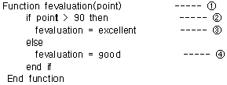
- Function fevaluation(point)
- if point > 90 then
- fevaluation = excellent
- fevaluation = good
(정답률: 52%)
37. 다음은 Visual Basic 편집 창에 나타난 내용이다. 설명이 잘못된 것은?
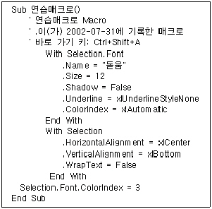
- 이 매크로는 폰트크기를 12로 지정했다.
- 이 매크로는 밑줄을 지정했다.
- 이 매크로의 글꼴은 “돋움”으로 바꾸는 작업을 한다.
- 이 매크로는 가로 가운데 맞춤을 한다.
(정답률: 57%)
38. 다음과 같이 B열에는 회사명이, C열에는 수주금액이 입력되어 있을 때, C9셀에 한국시스템의 평균수주액을 계산하여 표시하는 배열수식을 만들어 입력하고자 한다. 배열수식으로 올바르게 입력하는 방법은?
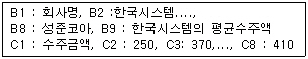
- =AVERAGE(IF(B2:B8="한국시스템",C2:C8))이라 입력한다.
- {=AVERAGE(IF(B2:B8="한국시스템",C2:C8))}이라고 바로가기 키를 사용하지 않고 직접 입력한다.
- =AVERAGE(IF(B2:B8="한국시스템",C2:C8))이라 입력 후 Ctrl+Enter 키를 누른다.
- =AVERAGE(IF(B2:B8="한국시스템",C2:C8))이라 입력 후 Ctrl+Shift+Enter 키를 누른다.
(정답률: 47%)
39. 다음 중 1300이상인 데이터에 대해 빨강색으로 표시하고 천 단위 마다 쉼표를 붙이고자 할 때 올바른 표시 형식은?
- [>=1300][빨강]#,###
- [>=1300](빨강)#,###
- (>=1300)[빨강]#,###
- (>=1300)(빨강)#,###
(정답률: 54%)
40. 다음 중 지도차트에 대한 설명으로 잘못된 것은?
- 지도차트에 사용되는 국가명 또는 도시명은 엑셀에서 정의하는 이름을 사용해야 한다.
- 구분차트는 숫자 자료를 음영 또는 색상으로 표시한다.
- 밀도차트는 숫자 자료를 점의 개수 표시한다.
- 등급차트는 숫자 자료를 기호의 개수로 표시한다.
(정답률: 46%)
3과목: 데이터베이스 일반
41. 다음 중 보고서 작업에 대한 설명으로 가장 옳지 않은 것은?(문제 오류로 실제 시험장에서는 2, 4번을 정답 처리한 문제 입니다. 여기서는 1번을 정답 처리 합니다.)
- 폼에서와는 달리 보고서에서는 컨트롤에 데이터를 입력할 수 없다.
- 보고서의 컨트롤에서는 컨트롤 원본을 이용하여 특정 필드에 바운드시킬 수 없다.
- 데이터의 크기가 일정하지 않은 경우 특정 컨트롤의 확장 가능 속성을 '예'로 설정하면 인쇄시에 데이터의 크기에 맞게 세로 길이가 확장되어 표시된다.
- 폼 바닥글이나 보고서 바닥글에 요약정보를 표시할 수 있다.
(정답률: 61%)
42. 다음 중 기본키(Primary key)의 특징에 대한 설명으로 옳지 않은 것은?
- 널값을 입력할 수 없다.
- 중복된 값을 입력할 수 없다.
- 입력된 값을 변경할 수 없다.
- 두 개 이상의 필드를 묶어서 기본키로 설정할 수 있다.
(정답률: 49%)
43. 아래의 두 테이블을 다음과 같이 조인하여 질의를 수행한 경우의 결과에 대한 설명으로 가장 옳지 않은 것은?
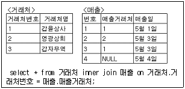
- 조회 결과의 필드수는 5개이다.
- 조회 결과의 레코드수는 4개이다.
- 3번 거래처에 대한 정보는 나타나지 않는다.
- 4번 매출에 대한 정보는 나타나지 않는다.
(정답률: 40%)
44. 필드수와 레코드수가 각각 3, 4개인 A 테이블과 2, 5개인 B 테이블에 대해서 다음과 같이 곱한 질의 결과의 레코드수와 필드수는 각각 몇 개인가?
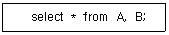
- 필드수 : 5개, 레코드수 : 9개
- 필드수 : 5개, 레코드수 : 20개
- 필드수 : 6개, 레코드수 : 9개
- 필드수 : 6개, 레코드수 : 20개
(정답률: 45%)
45. 친구 테이블을 이용하는 보고서의 레코드 원본 속성에 지정하기에 가장 적합하지 않은 것은?
- 친구
- select * from 친구
- select * from 친구 where 구분 = '재학'
- 친구(친구번호,이름,나이)
(정답률: 44%)
46. 보고서에서 페이지 번호를 인쇄하려고 한다. 페이지 번호 식과 각 페이지에 나타나는 결과가 옳지 못한 것은? (단, 전체페이지는 2페이지로 가정한다)
- 식: =[Page] , 결과: 1, 2
- 식: =[Page] & "페이지" , 결과: 1페이지, 2페이지
- 식: =[Page] & "중" & [Page] & "페이지" , 결과: 2중 1페이지, 2중 2페이지
- 식: =Format([Page], "000") , 결과: 001, 002
(정답률: 50%)
47. 액세스에서 다음 질의에 대한 설명으로 가장 옳지 않은 것은?
- delete * from 매출 : 매출 테이블을 완전히 삭제한다.
- update 사원 set 급여 = 급여 * 1.1 where 사번 in (2,3,4) : 사번이 2,3,4인 사원의 급여를 10% 인상한다.
- insert into 학생(학번,이름,나이) values (1,'홍길동',20) : 학번,이름,나이가 각각 1, 홍길동, 20인 레코드를 학생테이블에 추가한다.
- insert into 졸업생(학번,이름,나이) select 학번,이름,나이 from 학생 where 상태 = '졸업' : 학생 테이블에서 상태 필드의 값이 '졸업'인 학생의 목록을 졸업생 테이블에 추가한다.
(정답률: 38%)
48. 그림에서와 같이 조회표시에서 콤보상자를 선택하면 여러 가지 속성이 표시된다. 속성에 대한 설명 중 잘못된 것은?
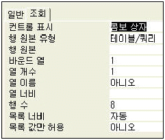
- 행 원본 : 원본으로 사용될 데이터를 지정한다.
- 바운드 열 : 콤보상자나 목록상자에 표시되는 열의 수를 지정한다.
- 행 수 : 콤보상자의 목록에 표시되는 행의 수를 지정한다.
- 목록너비 : 콤보상자에 나타나는 목록의 전체 너비를 cm와 같은 형식으로 지정한다.
(정답률: 46%)
49. 다음 중 기본보기 속성을 통해 설정하는 폼의 종류에 대한 설명으로 가장 옳지 않은 것은?
- 단일 폼은 한번에 한 개의 레코드만을 표시한다.
- 연속 폼은 현재 창을 채울 만큼 여러 개의 레코드를 표시한다.
- 연속 폼은 매 레코드마다 폼 머리글과 폼 바닥글이 표시된다.
- 데이터시트 형식은 스프레드시트처럼 행과 열로 정렬된 폼 필드를 표시한다.
(정답률: 46%)
50. Select 문장에서 한 개 또는 그 이상의 필드를 기준으로 오름차순 또는 내림차순으로 정렬하고자 할 때 사용되는 절은 무엇인가?
- having 절
- group by 절
- order by 절
- where 절
(정답률: 56%)
51. 여러 개의 열로 이루어지고, 그룹 머리글과 그룹 바닥글, 세부 구역이 각 열마다 나타나는 보고서는 무엇인가?
- 단일폼 보고서
- 크로스탭 보고서
- 차트 보고서
- 레코드 보고서
(정답률: 47%)
52. 다음 중 폼을 구성하는 컨트롤들의 그룹화에 관련된 설명으로 옳지 못한 것은?
- 컨트롤들을 그룹화하기 위해서는 <Ctrl> 키를 누른 상태에서 컨트롤을 눌러야 한다.
- 그룹을 지정하여 한번에 컨트롤의 크기를 조정하거나 이동할 수 있다.
- 그룹화할 컨트롤을 선택한 후 [서식]-[그룹]을 선택한다.
- 그룹 해제시에는 [서식]-[그룹해제]를 선택한다.
(정답률: 54%)
53. 다음 중 레코드가 추가될 때마다 필드에 자동으로 부여되는 기본값의 설정 식과 자동적으로 입력되는 값에 대한 설명으로 가장 옳지 않은 것은?(문제 오류로 실제 시험장에서는 3, 4번을 정답 처리한 문제 입니다. 여기서는 1번을 정답 처리 합니다.)
- 기본값을 “1” 로 지정하면 자동적으로 1이 입력된다.
- 기본값을 “서울”로 지정하면 서울 이라는 문자열이 입력된다.
- 기본값을 “0”으로 지정하면 빈 문자열(zero space)이 입력된다.
- 기본값을 =“Date()”과 같이 지정하면 오늘날짜가 입력된다.
(정답률: 56%)
54. 다음의 모듈에 대한 설명으로 가장 옳지 않은 것은?
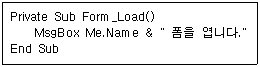
- 서브 루틴의 이름은 Form_Load 이다.
- 폼을 디자인 보기로 열 때 자동적으로 실행된다.
- 폼 이름이 '회원목록' 이면 "회원목록 폼을 엽니다."라는 메시지를 표시한다.
- 폼의 이름을 바꾸거나 폼을 복사하여도 동일한 기능을 수행한다.
(정답률: 41%)
55. 다음 중 폼이나 보고서의 원본이 되는 테이블이나 쿼리의 레코드를 특정 조건에 맞는 것으로 제한하기 위해 사용하는 매크로 함수는 무엇인가?
- ApplyFilter
- FindRecord
- OpenQuery
- SendObject
(정답률: 50%)
56. 학생들은 여러 과목을 수강하며, 한 과목은 여러 학생들이 수강한다. 이러한 상황에 대한 다음의 테이블 설계 중에서 가장 적절한 것은? (단, 밑줄은 기본키를 의미함)(문제 오류로 여기서는 정답을 1번 처리 합니다. 밑줄은 추후 복원해 두겠습니다.)
- 학생(학번,이름,연락처) , 과목(과목코드,과목명,담당교수) , 수강(학번,과목코드,성적)
- 수강(학번,이름,연락처,수강과목코드) , 과목(과목코드,과목명,담당교수)
- 수강(학번,이름,연락처,수강과목1,수강과목2,수강과목3) , 과목(과목코드,과목명,담당교수)
- 학생(학번,이름,연락처) , 과목(과목코드,과목명,담당교수) , 수강신청(학번,과목코드,이름,과목명)
(정답률: 57%)
57. 다음 중 폼에서 컨트롤 작업에 대한 설명으로 가장 옳지 않은 것은?
- 폼의 컨트롤을 특정 필드에 바운드시키려면 컨트롤원본 속성을 이용한다.
- 목록상자나 콤보상자는 특정 필드에 바운드시킬 수 없다.
- 필드목록에서 특정 필드이름을 끌어와 폼에 드롭시키면 컨트롤을 생성하고 자동적으로 해당 필드에 바운드시킨다.
- 컨트롤에 표시된 값을 수정하면 바운드된 필드의 값도 변경된다.
(정답률: 50%)
58. 다음 중 액세스(Access)에서 관계의 참조 무결성에 대한 설명으로 옳지 않은 것은?
- 기본 테이블의 기본키 필드가 다른 테이블의 외래키 필드와 데이터 형식이 같을 때 참조 무결성을 강화할 수 있다.
- 고유 인덱스가 설정되어 있더라도 기본키 필드가 아니면 관계를 만들 수 없다.
- 기본 테이블의 기본키 필드가 바뀌면 관련 테이블에서 해당 필드의 값을 자동으로 수정하도록 할 수 있다.
- 기본 테이블에서 레코드를 삭제하면 관련 테이블에서 관련된 레코드가 자동으로 삭제되도록 할 수 있다.
(정답률: 47%)
59. 다음 중 색인(index)에 대한 다음 설명으로 가장 옳지 않는 것은?
- 색인을 설정하면 자료의 조회가 빨라진다.
- 색인을 설정하면 자료를 정렬해서 조회하는 시간이 단축된다.
- 색인을 설정하면 자료의 갱신 속도가 빨라진다.
- 중복불가능(unique) 색인을 설정하면 중복된 자료의 입력을 방지할 수 있다.
(정답률: 58%)
60. 다음 중 하위 폼에 대한 설명으로 옳지 못한 것은?
- 폼 안에 들어가는 폼을 하위 폼이라고 한다.
- 하위 폼을 사용하여 일대다 관계에 있는 데이터를 효과적으로 입력하거나 표시할 수 있다.
- 기본 폼에는 여러 개의 하위 폼을 포함할 수 있다.
- 폼을 다른 폼의 하위 폼으로 포함하기 위해서는 탭 컨트롤을 이용한다.
(정답률: 50%)